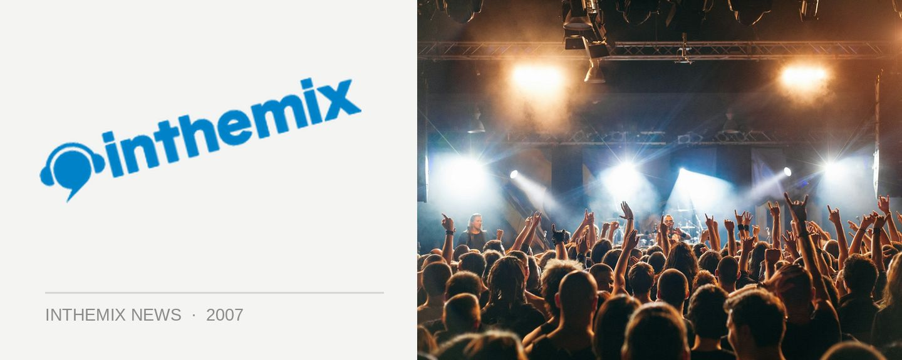

Transmission Next Gen DJ Comp Finals this Sunday night
After months of up and coming DJs competing to have a chance to play at the next Transmission Magic City party, this Sunday night will see the winners finally chosen. The Anarchist, The Horror, Spinout and Toxic are all in the running to play a set on the main trance stage on the 26th of May while Gavin DeMyer, Robbie Jackson, Nik Mila and Sean Noreiks will be competing to play on the house stage.
After a number of heats over the past few months, the competition will be fierce with competitors judged in a number of categories including beat mixing skills, tricks & skills, audio techniques, track selection, crowd reaction, individuality, DJ persona and whether at the end of the day they are main stage material!
Get on down to The Temple at Vbar this Sunday from 2pm to check out the finals, set times are as follows…
House/electro/breaks front room
2:00: Nik Mila
2:30: Gavin DeMyer
3:00: Sean Noreiks
3:30: Robbie Jackson
4:00: DJ Comp Results
Trance/hardstyle back room
4:30: Toxic
5:00: The Anarchist
5:30: The Horror
6:00: Spinout
6:30: DJ Comp Results